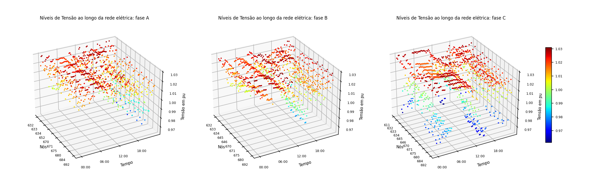
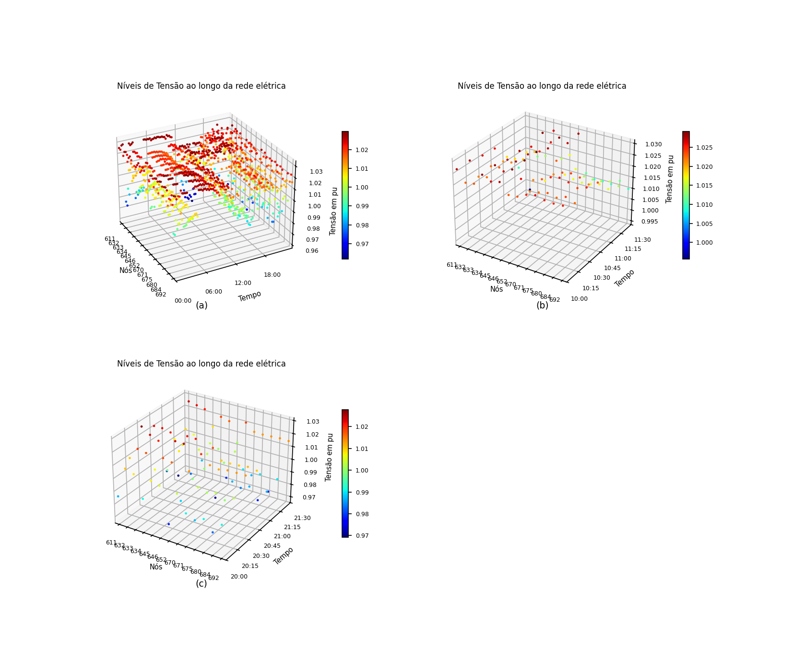
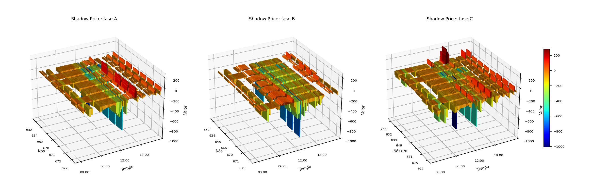

Resultados¶
Todos os números desta página são do caso IEEE 13 como o repositório o gera, com o regulador nas derivações da previsão, a rede ideal entre os agentes e um cenário por prosumidor. Para refazê-los:
./run.sh centralizado && ./run.sh market && ./run.sh figuras # por fase
MARKET_FASE=0 ./run.sh centralizado && MARKET_FASE=0 ./run.sh market && MARKET_FASE=0 ./run.sh figuras # por barra
As contagens são de leituras barra-fase-intervalo nas 32 fases de carga e de passagem do alimentador (a subestação fica de fora), ao longo dos 96 intervalos do dia. A faixa do mercado é 0,97 a 1,03 pu; a ANSI C84.1 Range A, 0,95 a 1,05 pu, conta também as fases da subestação.
A co-simulação¶
A passada base executa a programação que os prosumidores propõem, sem negociação. A negociada executa a programação acordada e, a cada 15 min, a fase de operação sobre a demanda realizada. Em ambas, quem resolve a rede é o OpenDSS, e não o modelo linear.
| Formulação | Passada | > 1,03 pu | < 0,97 pu | fora da ANSI A | rodadas |
|---|---|---|---|---|---|
por barra (MARKET_FASE=0) |
base | 472 | 65 | 95 | |
| negociada | 134 | 18 | 3 | 48 | |
| por fase (padrão) | base | 522 | 96 | 105 | |
| negociada | 9 | 28 | 0 | 42 |
A formulação por barra cumpre o que promete: na média das fases, a negociada tem zero leituras acima de 1,03 pu. Só que a média esconde 134 leituras de fase acima do limite, concentradas na fase B (646, 645, 634, 675, 671) e na fase A da 634, ao longo do dia todo. Por fase, o excesso cai para 9 leituras, nenhuma acima de 1,031 pu, e nenhuma leitura sai da ANSI A.
A subtensão residual cresce de 18 para 28 leituras, quase todas na fase C do fim do ramal 684-611 (611, 684), à noite e no começo da manhã. A menor tensão é 0,961 pu, dentro da ANSI A. É o lado que a formulação por fase passa a ver e que a por barra, vigiando a média, deixava de fora.
As linhas de base das duas formulações não são iguais porque a proposta do prosumidor é aplicada de outro jeito: por barra, como carga equilibrada na barra; por fase, dividida igualmente entre as portas.

Tensão de cada fase de cada barra ao longo do dia, na fase de operação da formulação por fase.

O mesmo gráfico na formulação por barra, que mostra a média das fases: (a) o dia, (b) e (c) as janelas de maior sobretensão e de maior subtensão. Nada passa de 1,03 pu, mas as fases individuais passam.
O preço sombra por fase¶
Com a análise por fase, o λ deixa de ser uma superfície barra × tempo e passa a ser três, uma por fase, cada uma só com as barras que têm aquela fase.

Os vales mais fundos, de −700 a −1.000, aparecem ao meio-dia, nas barras onde o
fotovoltaico mais excede a carga: é onde o DSO precisa que o armazenamento
absorva. O λ está na unidade de Ck vezes potência, e não em moeda (ver
O modelo de mercado).
A negociação centralizada¶
A mesma decomposição dual sem agentes nem Mosaik, sobre a previsão. O fluxo não linear é conferido com as derivações do regulador fixadas pela previsão:
| Formulação | > 1,03 pu | < 0,97 pu | fora da ANSI A | rodadas | energia deslocada |
|---|---|---|---|---|---|
| por barra | 151 | 18 | 1 | 48 | 6.903 kWh |
| por fase, inversor de quatro fios | 9 | 28 | 0 | 42 | 7.527 kWh |
| por fase, inversor de três fios | 5 | 26 | 0 | 63 | 8.987 kWh |
Corrigir por fase custa 9% mais energia deslocada que corrigir a média, e
converge em menos rodadas. Com o inversor de três fios
(MARKET_DISPOSITIVO=equilibrado), o excesso cai um pouco mais, mas exige 19% mais energia que
o de quatro fios para o mesmo efeito, porque uma injeção igual nas três fases
mexe também nas fases que já estavam dentro da faixa. Na co-simulação, o de três
fios fica em 11 leituras acima e 26 abaixo, sem sair da ANSI A, e leva 63
rodadas contra 42.
As rodadas são as do critério de parada relativo (MARKET_EPS_REL = 1e-3, ver
O modelo de mercado). Com o critério absoluto da tese, eram 81, 66
e 108, para as mesmas contagens de tensão.
Sobre a rede 6TiSCH¶
Com NET_BACKEND=omnet NET_TIME_SCALE=0.02, as mensagens atravessam a rede
6TiSCH do OMNeT++. O resultado elétrico é o mesmo da rede ideal: 42 rodadas, 9
leituras acima de 1,03 pu, 28 abaixo de 0,97 e nenhuma fora da ANSI A. Nenhuma
das 2.978 mensagens se perdeu, e não houve retransmissão. O despacho da
programação acordada, por FIPA-Subscribe, faz parte do tráfego: o DSO publica ao
concentrador, que publica aos 10 prosumidores, e as confirmações sobem.
O custo aparece no tempo. As mensagens do DSO, do concentrador e do agente de mercado com λ e programação por porta têm de 20 a 34 kB, e o ciclo 3 de cada rodada gastou de 474 a 541 s de rede, acima do orçamento de 300 s em todas as 42 rodadas. Somadas, são 5,8 h de rede para fechar a negociação do dia seguinte; com o critério de parada absoluto, que pedia 66 rodadas, eram 9,1 h. Na fase de operação, com uma rodada por janela, o ciclo fica em 22 s.
De onde vem esse tempo¶
O atraso é o que o escalonamento TSCH prevê: com 2 cells por enlace num
slotframe de 4,04 s, um enlace escoa um quadro de 127 bytes a cada 2,02 s
(cerca de 63 B/s), e uma mensagem de 24 kB, com 190 quadros, leva 384 s num
salto, a mediana medida. O backend lossy transmite a 50 kbps contínuos, cem
vezes mais, e por isso não serve de comparação direta.
Dois experimentos (por fase, quatro fios, 22/10/2026) separam o que é do rádio e o que é do caso; nos dois o resultado elétrico é idêntico ao da rede ideal:
| Variação | Ciclo 3 por rodada | Co-simulação |
|---|---|---|
| 6TiSCH, padrão | 474 a 541 s | ~18 min |
agentes na mesma coordenada por cabo (TISCH_ARGS=--**.tisch.colocated_wired=true) |
0 s | 105 s |
tamanhos declarados da referência (NET_MESSAGE_SIZE=declarado) |
18 a 26 s | 262 s |
No IEEE 13 o concentrador fica no transformador da subestação, na mesma coordenada do DSO e do agente de mercado, e todo o tráfego dos ciclos 2 e 3 acontece entre esses três. O padrão continua tratando essa troca como rádio. A mensagem mais lenta que sobra no rádio é o despacho: o concentrador manda a cada prosumidor a programação inteira (24 kB, até 779 s), embora ele use só as suas portas.
Com o backend lossy a 1% e 5% de perda (e MARKET_ROUND_TIMEOUT=3), a
negociação fecha nas mesmas 42 rodadas, com 3 e 18 retransmissões, e o resultado
elétrico é idêntico ao da rede ideal. Esse teste achou uma falha, já corrigida: a
primeira troca da verificação de operação (AM para AD) não era retransmitida, e
com 5% de perda 8 das 95 janelas ficavam sem correção.
Comparação de redes: 6TiSCH com mais fatias e Wi-SUN FAN¶
Mesmo cenário (por fase, quatro fios, 22/10/2026), mesmo rádio da tese (IEEE 802.15.4g a 0 dBm, mesmo modelo de propagação e mesma regra de enlace). Em todas as linhas a negociação fecha em 42 rodadas, sem perda nem retransmissão, e o resultado elétrico é idêntico ao da rede ideal, tensão a tensão.
Rede (TISCH_MAC, parâmetro) |
Ciclo 3 por rodada | Rodadas acima de 300 s | Rede somada na negociação | Despacho, maior atraso | Ciclo 3 na operação | Co-simulação |
|---|---|---|---|---|---|---|
| 6TiSCH, 1 fatia | 945 a 1.081 s | 42 | 11,6 h | 1.550 s | 44 s | 33 min |
| 6TiSCH, 2 fatias (padrão) | 474 a 541 s | 42 | 5,8 h | 779 s | 24 s | 17 min |
| 6TiSCH, 5 fatias | 192 a 218 s | 0 | 2,3 h | 316 s | 12 s | 8 min |
| 6TiSCH, 10 fatias | 97 a 110 s | 0 | 1,2 h | 161 s | 8 s | 5 min |
| 6TiSCH, 20 fatias | 50 a 56 s | 0 | 0,6 h | 84 s | 6 s | 3 min |
| Wi-SUN FAN, 50 kbps | 5 a 6 s | 0 | 4 min | 8 s | 0,4 s | 1,2 min |
| Wi-SUN FAN, 150 kbps | 2 s | 0 | 1 min | 4,5 s | 0,2 s | 1 min |
| Wi-SUN FAN, 300 kbps | não fecha |
- Na 6TiSCH o tempo cai na proporção das fatias, como a conta prevê. O ciclo 3 cabe no orçamento a partir de 4 ou 5 fatias por enlace.
- O Wi-SUN a 50 kbps, com o mesmo rádio da tese, fica duas ordens de grandeza abaixo: transmite quando quer, sem esperar fatia, e em quadros de 1.280 bytes.
- A 300 kbps a sensibilidade cai 7,8 dB, a rede fica com 51 enlaces (contra 74), e a ligação da subestação ao resto do alimentador passa a depender de enlaces com erro de 0,81 por quadro de 1.280 bytes. Mensagens de 24 kB não atravessam, o concentrador esgota as retentativas e prosumidores entram com programação zero. Mais taxa só ajuda enquanto o alcance continua cobrindo o alimentador.
- Os dois modelos não têm disputa pelo meio. No Wi-SUN ela existe de verdade (o concentrador tem um rádio só e mandaria os 10 despachos em sequência, uns 80 s no total); na 6TiSCH as fatias são reservadas por enlace, então o modelo é menos otimista ali.
Onde ficam os arquivos¶
Cada execução grava em output/market/ (por fase) ou output/market_por_no/
(por barra). A lista do que cada arquivo contém está em
Arquivos de saída, e as figuras em figuras/,
dentro da mesma pasta.